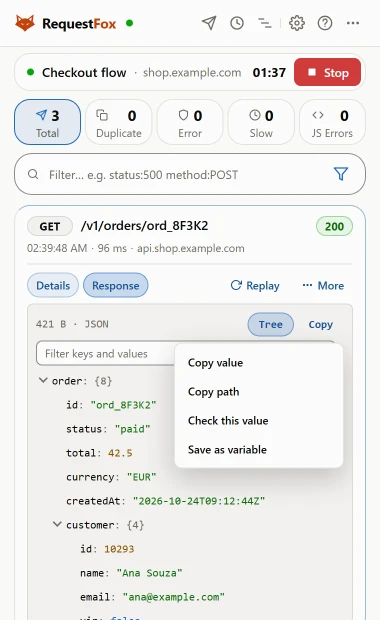

Record every call, the moment it starts
Press Start (or Alt Shift S) and use your app. RequestFox lists fetch, XMLHttpRequest, WebSocket frames and server-sent events across tabs, iframes and pop-ups, including calls a service worker answers without the network.
- A call shows as soon as it starts and turns Slow live if it drags; its finished card replaces it.
- Live streams: server-sent events, NDJSON and token streams, read with fetch, XMLHttpRequest or EventSource, stay open as rows that fill as events arrive. RequestFox keeps the newest ones within the body limit, and flags error events, a missing end marker and long pauses. A page's gRPC-Web or Connect server stream is kept the same way.
- The log can be a table: one line per call, sorted by a click on a heading, with columns that read a value out of each JSON response (
data.items.length), a Group by host view and a session Overview (calls, errors, slow calls, status families, the slowest five, hosts). A 5,000-call log only draws the rows on screen. - Table columns: Add column reads one value from each JSON response by a path (
data.items.length,$.user.id) and offers the paths of a response as suggestions. Columns shows or hides the table's own columns, takes up to four response columns, and puts them in the order you want (drag a heading, or use the arrows in the dialog). The choice is saved for the site. - The Overview has Copy as Markdown for a bug report (calls named by host and path only: no query string, headers or bodies) and a Calls over time bar chart, with the busiest stretch also written in words.
- With two or more browser windows open, Start can also record the same site in your other windows. Show page files (Settings, off by default) lists the page's own scripts, styles, images and fonts too, each with a badge, and never raises an alert for them.
- Each call is tied to the click or form submit that caused it.
- Every session goes to History, to reopen, search and compare with another run.
- Search takes free text and tokens such as
status:500,host:api.example.comandpath:/users/:id; a leading-leaves matches out.
Problems flagged for you
These are the panel's own labels. Open a flagged call and it says what happened in plain words.
- Failed refused, timed out, or a 4xx/5xx response
- Slow past the slow threshold you set
- Duplicate · after 140 ms the same call fired twice in a moment
- Retry · after 900 ms sent again after it failed
- One call per item N+1: one call per id in a quick burst
- GraphQL error an error inside a 200 OK
- RPC error a JSON-RPC error inside a 200 OK
- Token expired a 401 caused by an expired JWT
- Schema changed the response's JSON shape changed
- Spec mismatch the call breaks your linked OpenAPI spec
- Check failed one of your checks failed
- Security a passive finding, such as a token in a URL
Inspect without leaving the page
Each call opens to its headers, body and Details: the timing split (DNS, connect, TLS, waiting, download), the HTTP version, bytes on the wire, and the page functions that made the call.
- JSON responses read as a tree you can filter, with a value's path one click away.
- A web address in a response is a link that opens a new GET request in Compose, and so is an address or a path from the site's root in the JSON tree (Open as request). On the same site the call's headers come along (not the ones redaction hid); to another site, none do.
- Hex shows any response as bytes (offset, hex and ASCII; a longer response shows 32 KB and says so), with Copy hex and Copy as base64.
- A JSON response that is a list of objects offers Table beside Tree: the first six columns, a column picker, 100 rows at a time, sort by a heading, and Copy as CSV (a text a spreadsheet would run as a formula is written as text).
- The Timeline puts every call on a time ruler; Performance lists the heaviest endpoints.
- GraphQL calls are checked against a schema you load, and so are their responses: a wrong type, a null in a non-null field or a missing field is named by its place in the response. A custom scalar that declares
@specifiedByis checked by it (a date-time, UUID, URL or email address); one that does not takes any value. Every flagged call carries a stable finding code (such asRF-FAILED-5XX) and a "Why is this flagged?" explanation, offline. - gRPC-Web and Connect responses are read as fields once you load your
.protofiles (RequestFox's own parser), and by field number without them. - SOAP and XML: import a WSDL (a WSDL split over several files is followed), read an XML response as a tree, and add XPath checks (XPath 1.0 subset, our own reader).
- A call to an LLM API (OpenAI-style, Anthropic or Gemini) shows the model, the token counts and the stop reason its own response gives. Nothing is estimated, and no cost is shown.

Compose, replay and send
Replay any recorded call, or change it first with Edit and send again… in its ··· menu. Compose builds requests from scratch with Params, Headers, raw, form or multipart bodies, environments and {{variables}}, secret variables kept encrypted, and saved collections. Up to five requests stay open at once as chips above the URL, each with its own form and response, and they come back when the panel opens again (typed secrets are never written to disk).
- Auth: Basic, Bearer, API key, Digest, OAuth 2.0 (browser sign-in with PKCE, device code, client credentials, refresh token, password), OpenID Connect discovery, OAuth 1.0a (HMAC, RSA and PLAINTEXT signatures), JWT Bearer signing (HS, RS and ES algorithms), AWS Signature v4 and an HMAC preset.
- Save a response as an example, and keep notes on requests, collections and folders. The QUERY method (a safe request with a body) is in every method list.
- A cookie jar, per site and off until you turn it on, keeps the cookies a site sets so a sign-in carries to your next sends. It never touches the browser's own cookies, and cookie values never go into an export or the log. Importing the browser's cookies for a site is the one step that asks for an optional permission.
- While recording, a send goes through the page with its cookies; with nothing recording it goes from the extension itself, without any page's cookies.
- A GraphQL
subscriptionsent from Compose opens a WebSocket (graphql-transport-ws or the older graphql-ws) and lists the events live, each checked against the schema you loaded. Send reads Stop meanwhile. Headers and auth go with the handshake (the browser may ask you to allow RequestFox on that site) and in the connection'sconnection_initpayload. Nothing is recorded or kept. - A collection or folder can pin a Default environment: sending one of its saved requests, or opening it in Compose, switches to that environment. One you pick by hand is kept.
- A WebSocket client connects to any
ws://orwss://server, with a Socket.IO mode; recorded Socket.IO frames read as events and their arguments. - An MCP server tester: connect to an MCP server over Streamable HTTP, list its tools, resources and prompts, and call one from a form built from its schema. It only sends the requests you pick and shows the responses.
- Copy any request as code in 15 languages, cURL for bash and Windows cmd included.
- Environments can inherit from a parent, and a
.envfile imports as an environment (credential-like values go to the encrypted vault).
Import from Postman, Insomnia, Bruno, Hoppscotch, Thunder Client, OpenAPI 3, Swagger 2, HAR and cURL, from a file, several files or a whole folder at once (batch import, with one summary of what happened to each file), or from a URL (Import from URL: the browser asks for access to that one site). How to replay and edit a request.
Mocks and faults
Make an endpoint fail, slow down, pause for editing, or return the response you choose, with no backend change. Press Mock on any recorded call: its dialog holds the real status and body, to change before you press Mock it. The card then says Mocked, with a menu to edit the response, keep it on without recording, or turn it off.
- Rule sets and mock sets stay on with nothing recording: switch one on and its header, URL or mock rules apply to the sites it names in every tab, until you switch it off. A chip under the top bar says what is on. Each is one JSON file to share.
- In Chrome, rewrite the request or the response with a script: sign a header, add a field to every body, or change what the page gets back. In Chrome and Firefox, WebSocket message rules drop or change a socket's text messages by text or a JSON field.
- In Chrome, Slow down the whole tab (Slow 3G, Fast 3G, 4G, offline or your own numbers) through the browser's debugger. It is optional, asks once, and Chrome then shows its own "started debugging this browser" bar. Firefox has no such API, so it offers each rule's Slow and Throttle modes instead. DevTools throttles with nothing to allow.

Checks, contracts and suites
Add pass/fail checks to an endpoint on status, time, fields, headers or a JSON Schema, or a check that a response stays the same as last time. Advice on caching and compression points out a large text response sent uncompressed, or the same response downloaded again with nothing a cache could use. Link an OpenAPI spec and every call is checked against it, with coverage of the operations seen. Chain saved requests into suites, with pass or fail per step and data-driven runs. Run options on a suite set a wait between steps (0 to 60 s, for an API that rate-limits), a number of runs (1 to 100) and stop at the first failure; Export as CI config carries them to requestfox-ci run, whose --delay-ms, --bail and --iterations override them.

MCP control: let a local agent drive RequestFox
An AI agent that you run on your own computer can use RequestFox through its own MCP server. RequestFox itself runs no AI model; it only answers the tool calls an agent sends it. It is off by default.
- In Settings, Sign-in, cookies & connections, MCP control, turn on Let a local MCP client control RequestFox and press Download the CLI: one file, Node 18 or newer, with the MCP server inside. Start it with
node requestfox-ci.mjs mcp --http 3333 --control, give your agent the address and the token it prints, type the port and the one-time pairing code into RequestFox, and press Connect. The browser asks for access tohttp://127.0.0.1only. - 21 more tools while connected: start and stop recording, list calls with the panel's search syntax, read one call, replay it, send a request from Compose, create, change and delete mock and fail rules, switch rule sets and mock sets on or off, run saved requests and suites, export a HAR, report or docs page, clear the log and delete a collection. The whole-tab throttle is Chrome only.
- Pairing code: 10 letters and digits, good once and for 10 minutes, one try a second, replaced after 5 wrong ones. The session key stays in memory, and a session ends after 8 hours, when you press Disconnect, or when you close the panel or quit the browser.
- Local only: the extension connects out to 127.0.0.1, and the server refuses web pages and DNS-rebinding hosts. A chip under the top bar says Controlled by a local MCP client. Every action is listed under MCP actions, and at most 120 tool calls run a minute.
- Your click: sending or replaying a request (the host is shown), deleting a rule, changing a rule you made, clearing the log and deleting a collection each wait for you. So does a saved request or suite that changes data.
- What it cannot reach: no tool reads the cookie jar, the vault, secret variables or OAuth tokens. A request with
{{variables}}is refused. Responses are redacted as exports are.
Export evidence and tests
Export a session as a self-contained HTML report, HAR, CSV, session JSON, a Postman collection or an OpenAPI 3.0 spec built from the calls. Export your saved collections for Bruno, Insomnia or Hoppscotch (passwords, tokens and keys become empty variables to fill in), or as one API docs page (Export docs) with no script and no outside link. Open a GitHub or Linear issue with the repro filled in. Turn a recording into tests:
- Playwright
- Cypress
- k6
- JMeter
- Gatling
- Locust
Run the same checks in CI with the command-line tool you download from the panel; it can also make negative tests from an OpenAPI spec (probe) and serve a mock API from one (mock). The CLI can send over HTTP/2 (--http2, no quiet fall-back to HTTP/1.1), write the docs page (docs), say why a finding is flagged (explain) and fail only on new findings (--baseline). How to run API checks in CI.
Private by design
No account, no server, no analytics. Authorization headers, cookies and secret-shaped fields are redacted in everything you view or export, and site access is asked for when you press Start. Read the privacy policy.
What it does not do
- It sees what a browser tab sends. Mobile and desktop apps need a proxy tool such as HTTP Toolkit, Proxyman or Charles.
- No team workspace or cloud sync, by design. Share work as files: collections, sessions, HAR and reports.
- Pre-request and post-response scripts, and rewriting a request or response with a script, run in Chrome only; Firefox does not let extensions run code typed at runtime. Chaining values between requests works in both.
- No native gRPC or MQTT client: gRPC-Web and Connect work from a browser; client and bidirectional streams cannot be sent from one.
- RequestFox contains no AI model and no AI code. The MCP server tester and the LLM call view only test and inspect other services, and MCP control only answers an agent you run yourself. MCP servers that run as a local program (stdio) are out of a browser's reach.
- It is free. Its code is MIT-licensed and ships readable inside the extension, so you can check it yourself; the source repository is not public.